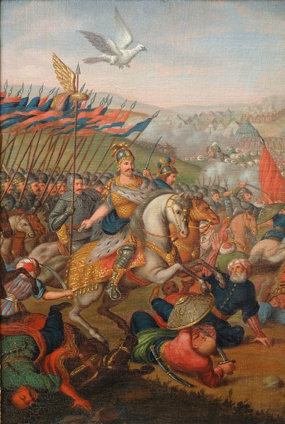
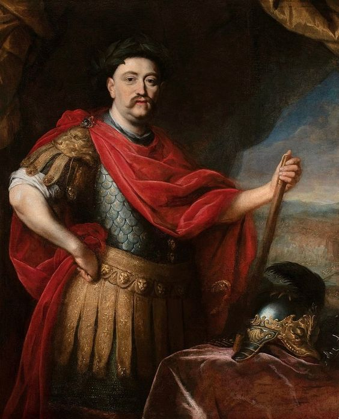
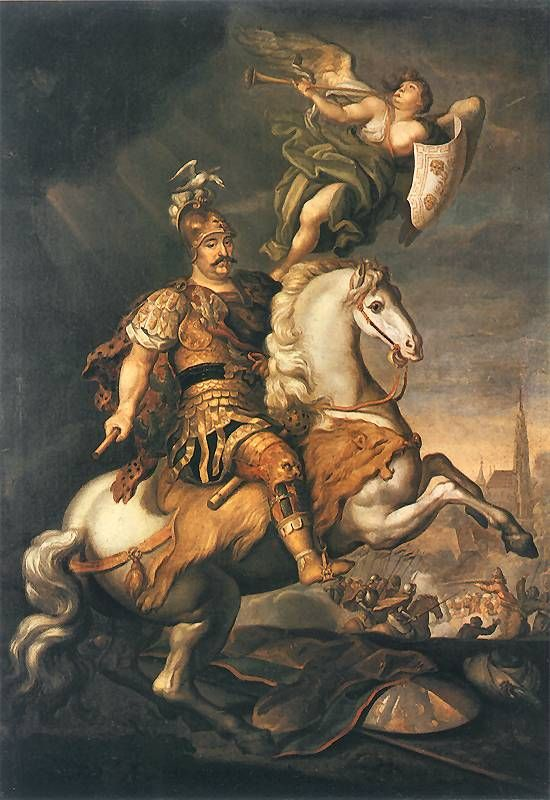

Bitwa pod Wiedniem - Jan III Sobiecki
Wstęp
W dniu 12 września 1683 roku, na terenie Wiednia, stolicy Austrii, rozegrała się jedna z najważniejszych bitew w historii Europy. Bitwa ta była kulminacyjnym momentem konfliktu między chrześcijaństwem a islamem oraz symbolem odwagi i determinacji obrony europejskiego kontynentu przed ekspansją Imperium Osmańskiego. Głównymi postaciami tego wydarzenia byli Jan III Sobieski, wielki hetman koronny Rzeczypospolitej Polskiej, cesarz Leopold I Habsburg, a także wielki wezyr Kara Mustafa z Imperium Osmańskiego. Bitwa pod Wiedniem jest jednym z najważniejszych epizodów w historii Polski i Europy, ponieważ przyczyniła się do ocalenia Wiednia i powstrzymania postępu tureckiej inwazji na zachodnią Europę. Kontekst historyczny tamtych czasów był zdominowany przez konflikty między chrześcijanami a muzułmanami, a także przez ekspansję tureckiego Imperium Osmańskiego w Europie. W obliczu zagrożenia dla Wiednia, Jan III Sobieski, wraz z sojusznikami, podjął decyzję o zorganizowaniu odsieczy wiedeńskiej, co zaowocowało decydującą bitwą. Warto zgłębić szczegóły tej epickiej konfrontacji, jej przebieg oraz znaczenie dla dalszych losów Europy i historii Polski.

Bitwa pod Wiedniem (fragment), XIX-wieczna kopia obrazu
Marcina Altomontego; Muzeum Pałacu Króla Jana III
w Wilanowie, fot. B. Seredyńska
Przygotowania do bitwy

Przygotowania do Bitwy pod Wiedniem w 1683 roku były niezwykle skomplikowane i angażowały wiele stron, które łączyły swoje siły w celu odparcia tureckiej inwazji na Europę Środkową. Oto opis przygotowań do tej historycznej bitwy:
1. Zagrożenie tureckie:
- Imperium Osmańskie, pod wodzą wielkiego wezyra Kara Mustafy, planowało zdobycie Wiednia jako kluczowego punktu wyjścia do dalszej ekspansji w Europie.
- Osmańczycy już od lipca 1683 roku otoczyli Wiedeń, prowadząc obłąkanie miasta i stopniowo zaciskając pierścień oblężniczy wokół niego.
2. Sojusznicy:
- Jan III Sobieski, wielki hetman koronny Rzeczypospolitej Polskiej, stanął na czele sojuszu przeciwko tureckiej inwazji. Współpracował ściśle z cesarzem Leopoldem I Habsburgiem, który dowodził obroną Wiednia.
- Sojusz ten był kluczowy, ponieważ połączył siły Polski, Austrii i innych państw europejskich w obronie wspólnego interesu.
3. Mobilizacja wojsk:
- Jan III Sobieski zebrał znaczne siły zbrojne w celu wsparcia Wiednia. Jego najważniejszymi siłami była słynna husaria polska, znana ze swojej niezwykłej odwagi i umiejętności bojowych.
- Wojska koalicyjne w składzie polskich, austriackich i niemieckich żołnierzy oraz oddziałów księcia Lotaryngii, skoncentrowały się w okolicach Wiednia.
4. Logistyka i zaopatrzenie:
- Warto zaznaczyć, że organizacja logistyczna była kluczowym elementem przygotowań do bitwy. Zaopatrzenie w żywność, amunicję i inne zaopatrzenie było kluczowe, aby utrzymać obrońców Wiednia i wsparć odsiecz.
Przygotowania do Bitwy pod Wiedniem wymagały wielu wysiłków, współpracy różnych państw i organizacji oraz umiejętnego dowodzenia. Te starania doprowadziły do decydującej bitwy, która odwróciła losy konfliktu i zapobiegła dalszej ekspansji Imperium Osmańskiego w Europie.
Przebieg bitwy
Bitwa pod Wiedniem w 1683 roku to kluczowe wydarzenie w historii Europy, w którym wojska pod dowództwem Jana III Sobieskiego odniosły zwycięstwo nad armią turecką, która oblegała Wiedeń. Bitwa ta miała miejsce w kontekście groźby inwazji tureckiej na Europę Środkową.
Oblężenie Wiednia przez armię turecką pod wodzą wielkiego wezyra Kara Mustafy trwało od lipca 1683 roku, a sytuacja stawała się coraz bardziej krytyczna dla obrońców. Jan III Sobieski, w sojuszu z cesarzem Leopoldem I Habsburgiem, zdecydował się na odsiecz Wiedniowi.
12 września 1683 roku husaria polska, prowadzona przez Jana III Sobieskiego, przeprowadziła heroiczny atak na pozycje tureckie. Kluczowym momentem było przekroczenie linii wroga przez husarię, co wywołało dezorganizację i panikę wśród wojsk tureckich.
Bitwa zakończyła się zwycięstwem wojsk koalicyjnych, co uratowało Wiedeń przed zdobyciem przez Turków. To wydarzenie miało ogromne znaczenie, ponieważ zatrzymało ekspansję turecką na zachód, osłabiło Imperium Osmańskie jako potęgę ekspansywną w Europie i uczyniło Jana III Sobieskiego bohaterem narodowym. Bitwa pod Wiedniem była punktem zwrotnym w historii Europy i wpłynęła na dalszy bieg wydarzeń w regionie.
Skutki bitwy
Bitwa pod Wiedniem w 1683 roku miała dalekosiężne skutki zarówno dla Europy, jak i dla Imperium Osmańskiego. Oto opis głównych skutków tej historycznej bitwy:
1. Ocalenie Wiednia:
Najbardziej oczywistym skutkiem bitwy pod Wiedniem było ocalenie samego miasta. Bitwa zatrzymała turecką inwazję i uratowała stolicę Austrii od zdobycia przez wojska Imperium Osmańskiego. Dzięki temu Wiedeń pozostała ważnym ośrodkiem kulturalnym i politycznym Europy Środkowej.
2. Powstrzymanie ekspansji tureckiej:
Bitwa pod Wiedniem zatrzymała postęp tureckiej ekspansji na zachód. Imperium Osmańskie traciło na znaczeniu jako siła ekspansywna w Europie, co miało wpływ na przyszłe granice i losy państw europejskich.
3. Podnoszenie morale Europejczyków:
Zwycięstwo pod Wiedniem stało się inspiracją dla innych państw europejskich do oporu przeciwko Osmanom. Bitwa ta podniosła morale i wiarę w możliwość obrony przed turecką inwazją.
4. Wzmacnianie pozycji Polski:
Zwycięstwo Jana III Sobieskiego w bitwie pod Wiedniem uczyniło Polskę ważnym graczem na europejskiej scenie politycznej. Król polski stał się bohaterem narodowym i zyskał prestiż wśród władców europejskich.
5. Upadek Kara Mustafy:
Klęska pod Wiedniem miała także konsekwencje w Imperium Osmańskim. Kara Mustafa, wielki wezyr, który dowodził turecką inwazją, został stracony przez sułtana Mehmeda IV jako kara za niepowodzenie.
6. Dalsze konflikty:
Choć bitwa pod Wiedniem była ważnym wydarzeniem, to nie oznaczała całkowitego zakończenia konfliktu między chrześcijanami a muzułmanami. Kolejne lata przyniosły dalsze starcia i wojny między nimi, ale bitwa ta była punktem zwrotnym w tej długotrwałej rywalizacji.
Bitwa pod Wiedniem miała długotrwałe skutki, które kształtowały historię Europy i Bliskiego Wschodu. Ocalenie Wiednia i zatrzymanie tureckiej ekspansji miało znaczenie nie tylko militarno-strategiczne, ale także kulturowe i polityczne, które wpłynęły na bieg historii w wiekach późniejszych.
© 2024 Oleksandra Nochovna